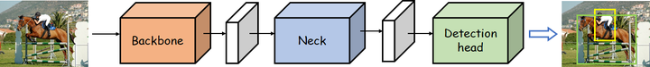

01 目标检测网络组成
目标检测网络组成
目前，目标检测的网络模型通常都遵循一个相似的结构，主要有3部分组成

- Backbone network，即主干网络，是目标检测网络最为核心的部分，用来提取输入图片的特征。大多数时候，backbone选择的好坏，对检测性能影响是十分巨大的。
- Neck network，即颈部网络（脖子网络？说实话，这个不翻译过来比较好……），Neck部分的主要作用就是将由backbone输出的特征进行整合（比如多尺度的融合）。其整合方式有很多，最为常见的就是FPN（Feature Pyramid Network），有关FPN的内容，我们会在展开介绍Neck的时候再次提到的。
- Detection head，即检测头，这一部分的作用就没什么特殊的含义了，就是若干卷积层进行预测，主要是改变特征图的形状。也有些工作里把head部分称为decoder（解码器）的，这种称呼不无道理，head部分就是在由前面网络输出的特征上去进行预测，约等于是从这些信息里解耦出来图像中物体的类别和位置信息。
我们可以为以上任意部分单独去设计一个模块，然后“插进去”即可。很多目标检测的优化工作就是这么来的，比如2018年的ECCV上的RFBNet，就是在SSD基础上，设计了RFB模块插进Neck部分，从而显著提升了模型性能。==这就是模型的缝合==
1.Backbone：目标检测网络的主体结构
通常，为了实现从图像中检测目标的位置和类别，我们会先从图像中提取出些必要的特征信息，比如HOG特征，然后利用这些特征去实现定位和分类。而在深度学习这一块，这一任务就交由backbone网络来完成。深度学习的强大之处就在于其特征提取的能力，在很多任务上都超越了人工特征。
当然，这里提出的是什么样的特征，我们是无从得知的，毕竟深度学习的“黑盒子”特性至今还无法真正将其面纱揭开。
从某种意义上来说，如何设计好的backbone，更好地从图像中提取信息，是至关重要的，因为特征提取不好，自然会影响到后续的定位检测。
早在目标检测任务之前，深度学习技术就已经在图像分类领域中发挥了重大的作用，大力促进了这一领域的发展，尤其是在ResNet系列的工作问世后，图像分类任务几乎达到了一个顶峰——从ImageNet比赛不再举办这一点就可以窥见一斑。虽然后续这个领域还在陆陆续续地出现些新工作（如GhostNet、ShuffleNet、ResNet各种升级版本、EfficientNet家族等）、提供了很多新的idea，不过基本上已经不再是当年那种百花齐放的盛况了。
深度学习技术能够这么出色地完成图像分类任务，基本上也就表明了深度学习技术确实在图像特征提取这一块有着十分出色表现和巨大的潜力。
因此，Backbone这一部分通常就是将诸如VGG、ResNet等模型搬过来（去掉最后的global avgpooling和softmax层），这一部分的参数初始化就直接使用在ImageNet上训练好的参数。这一模式也就是后来所说的“ImageNet pretrained”概念。
不过，自从Kaiming He的《Rethinking ImageNet Pre-training》发表之后，这一概念似乎也就不是必要的了——一个目标检测模型完全可以随机初始化所有的参数，包括backbone网络的参数，只要训练足够久，也可以达到很高的性能。
当然，得是训练足够久，而且要精心调参，正所谓天下没有免费的午餐（早餐和晚餐也不免费。），既然设计了一个backbone，不想去ImageNet上预训练，那就得多花些时间和精力来训练detector了~因此，目前ImageNet pretrained的思想仍旧是主流，毕竟只需要在ImageNet上训练一次backbone，就可以永久使用了
Backbone恒久远，Pretrain一次永流传~
最后，简单介绍几个常用的backbone模型：
首先是大型网络：
1.VGG网络：《Very Deep Convolutional Networks for Large-Scale Image Recognition》。其中最常用的就是VGG-16.
2.ResNet网络：《Deep Residual Learning for Image Recognition》。其中最常用的就是ResNet50和ResNet101。当任务需求很小的时候，也可以用ResNet18.
3.ResNeXT网络：《Aggregated residual transformations for deep neural networks》，这个我没有用过，但很多sota工作中都会使用，刷榜的小伙伴不妨考虑一下。
4.ResNet+DCN网络：这一网络主要是将DCN工作应用在ResNet网络上，DCN来源于这篇文章：《Deformable Convolutional Networks》。DCN是常用的涨点神器，不过似乎在实际部署的时候要复杂一些，刷榜的时候还是很值得一用。
5.DarkNet网络：常用的包括darknet19和darknet53，这两个网络分别来源于YOLOv2和YOLOv3两个工作中。其中darknet19对标的是vgg19，darknet53对标的是resnet101，但由于darknet本身是个很小众的深度学习框架，不受学术界关注，且这两个网络均是由darknet框架实现的，因此也就很少会在其他工作中看到这两个backbone。不过，笔者更偏爱darknet，也对其进行了复现，因为结构简洁，便于理解。
6.CSPResNet网络：出自于《CSPNet: A New Backbone that can Enhance Learning Capability of CNN》。CSP是一种很好用的结构，在减少参数量的同时，还能够提升模型性能，是不可多得的性价比极高的模块之一。像前一段时间的Scaled-YOLOv4就借鉴了这一工作的思想大幅度提升了YOLOv4的性能。不过，目前似乎也不是主流，仍旧无法撼动ResNet101和ResNet+DCN的刷榜地位。
然后是轻量型网络：
1.MobileNet：谷歌的工作，一共出了v1，v2，v3三个版本了，相较于上面那些以GPU为主要应用平台的大型网络，MobileNet则着眼于低性能的移动端平台，如手机、嵌入式设备等。
2.ShuffleNet：旷视的工作，一共出了v1和v2两个版本，同样是针对于低性能的移动端平台。
还有很多出色的backbone网络这里就不一一列举了，本文就只列出几个常用的，感兴趣的小伙伴可以自行查找更多的backbone网络。
还有一个==非常重要==的地方，BackBone决定了每个特征图的感受野，感受野的大小需要和待检测物体的尺寸相匹配，这样才有足够的正样本，模型才能更好地训练。
比如现在检测的物体是8x8大小的，某层的特征图的感受野是16x16，那么这个物体很可能不能落在感受野中间，模型可能就不能有效学习学习。但如果某层的感受野是8x8，那么至少有一个单元能命中该目标，这保证了正样本的数量。
BackBone的核心：能为检测提供若干种感受野和步长的组合，以满足对不同尺度物体的目标检测
2.Neck：更好地利用网络所提取的特征信息
上面已经目标检测模型中的backbone部分，其作用归根结底就是一句话：提取图像中有用的信息。当然，什么是有用的信息是一句很笼统的话，总之是这么个意思。然而，由于backbone网络毕竟是从图像分类（image classification）任务迁移过来的，其提取特征的模式可能不太适合与detection。因此，在我们最终从这些特征中得到图像中若干目标的类别信息（classification）和位置（location）信息之前，有必要对它们做一些处理。
这一部分，因为是在backbone之后，detection head之前，因此，被称为“Neck”。
相较于backbone常使用ImageNet Pretrained model，neck部分反倒没有什么说道。既然它的作用是将backbone的信息好好地整合一下，因此，研究者们自由发挥的空间也就会大得多了，很多模块被提出了出来。这里我们介绍几个常见的。
最有名的，莫过于FPN（Feature Pyramid Network）了：

图中d是FPN的结构
在SSD之前，不论是Faster R-CNN还是YOLO，他们都只是在backbone输出的最后一层很粗糙的特征图（feature map）上去做检测的。在CNN中，有一个很关键的概念叫做“感受野”（receptive field），大抵的意思就是这一张特征图的pixel能包含原始图像中的少个像素。直观上来看，backbone最后输出的很粗糙的特征图——通常都是stride=32，即经过了32倍降采样——具有很大的感受野，这对于大物体来说是很友好的，但对于小物体而言，过大的感受野且不说容易“失焦”，经过多次降采样，小物体的信息也很容易被丢失掉了。
为了解决这么个问题，SSD在三个不同大小的特征图上进行预测，即上图中的（c），但CNN随着网络深度的增加，每一层的特征图所携带的信息量和信息性质也不一样——浅层包含的细节信息、轮廓信息、位置信息等更多，深层包含的语义信息更多。因此，FPN的工作就是在检测前，先将多个尺度的特征图进行一次bottom-up的融合，也就是上图中的（d），这被证明是极其有效的特征融合方式，几乎成为了后来目标检测的标准模式之一。
除了FPN，还有SPP模块，这也是很常用的一个Neck结构，下图便是SPP的结构示意图。

YOLOv3通过添加这一模块有效提升了模型的性能，而模型的计算量的增加几乎可以忽略不记。SPP的思想很简单，通过不同大小的maxpooling核来丰富特征图的感受野。这一模块在YOLOv3中是添加在stride=32的特征图之后，FPN之前，后面讲到YOLOv3Spp网络的时候，我会详细介绍这一点的。因其极其简单的结构、有效的性能提升等高性价比特点，在后来的YOLOv4、PP-YOLO、Scaled-YOLOv4中都使用了SPP。
除此之外，还有：
- RFB：出自《Receptive Field Block Net for Accurate and Fast Object Detection》
- ASPP：出自《DeepLab: Semantic image segmentation with deep convolutional nets, atrous convolution, and fully connected CRFs》
- SAM：出自《CBAM: Convolutional block attention module》
- PAN：出自《Path aggregation network for instance segmentation》。PAN是一个非常好用的特征融合方式，在FPN的bottom-up基础上又引入了top-down二次融合，有效地提升了模型性能。
还有很多出色的Neck模块，这里就不一一展开细说了，感兴趣的读者可以自行上网搜索。
3.Detection head：负责检测与定位。
一张图像，在经过了backbone和neck两部分的处理后，就可以准备进行最终的检测了。也许有人会好奇，经过两部分的处理后，网络输出的东西长什么样子呢，这里，笔者展示三张经由ShuffleNet和PAN处理后得到的三个尺度的特征热力图，如下所示：

stride=8

stride=16

stride=32
然后是原图：

摘取自VOC2007数据集
至于上面三张热力图都包含了怎样的信息就交给读者自己来分析吧。
随后，在这样的特征图上，通过添加几层卷积即可进行识别和定位。==我觉得该层的作用就是改变特征图的形状==。Detection head并不像前两部分那样，有那么多的说道和自由发挥的空间，这一部分通常就是普通的卷积，如下图的RetinaNet：

RetinaNet的网络结构
RetinaNet最后的detection head部分就是三条并行的分支，每个分支右4层普通卷积堆叠而成。